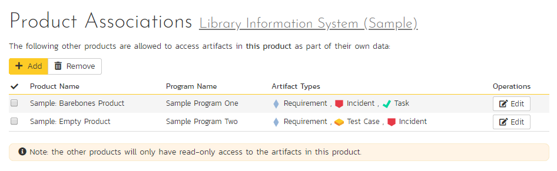

Product: General Settings
Product History Changes
This page displays a list, by default in chronological order, of changes made to items within the selected product.
At this time, only changes made to Requirements, Tasks, Incidents, Test Cases, Test Steps, Test Sets, Releases, and Automation Hosts are recorded. Certain changes are to these artifacts are not recorded, such as location changes (indenting, outdenting), and comment additions.

There are a handful of change types recorded and displayed here:
-
Modified: The most common, this means that one or more fields in this artifact were changed. Note that if a standard field and a custom field were changed at the same time, it will generate two separate entries, one for the standard fields, one for the custom fields.
-
Added: This means that this artifact was added, created in the system, either by using the New menu option or by copying. Pasting an item that was cut will not result in an Added entry being created.
-
Rollback: This items means that the artifact was rolled back to a specific event in the history.
-
Deleted: This entry is created when an artifact is deleted from the system.
-
Undelete: This entry is created when an artifact was deleted and then undeleted, making it live in the system again.
-
Purged: This entry is created (and all other history items are removed) when a deleted artifact is purged from the system. Purged items are removed from the database, and cannot be recovered.
Note: When upgrading from a version before v3.1, each individual field changed will be considered a unique change, due to how previous versions recorded history. However, as soon as the application is upgraded, simultaneous changes will be grouped together based on their last-update date.
This screen allows the administrator several options:
-
Viewing Details: The detail screen for each change set can be viewed by clicking on the change ID #. This will take you to the history details screen, described below.
-
Revert: This button will roll back all items in the list that are checked. You must have at least one row checked to revert. See the section on reverting below.
-
Purge All: This button will permanently purge all deleted items from the database. Once items are purged, they cannot be restored.
History Details Screen
The history details screen displays information on the selected change set:

The History Details screen will show basic information as well as fields that were changed in this change set. Shown here is the Change ID, the date and time that the change was made, the user that made the change, the change type, the artifact affected, and the set of fields affected.
If a set of fields were affected (Standard or Custom), then the list of fields will be listed below. In the example above, the change was a Modification, and 5 fields were changed. In other change types, no fields will be displayed.
If the artifact is still available in the system, you can click the Artifact or click the 'View Item' button in the toolbar to view the item as it is currently. However, if the item has been deleted, a warning label will be displayed (as above in the example screenshot), the View Item links will be disabled, and a new option, "Purge" will appear on the toolbar.
Purging Items
Items that have been deleted by any user still remain in the database, but do not affect statistics or reports, and do not show up in reports and cannot be viewed. The artifacts are still in the database, however, and can be restored by clicking on the Restore button in the toolbar.
Purging an individual item can only be done while viewing one of its history detail screens. Once an item is purged, you will be taken back to the history list screen. All the previous history items for the artifact will be removed, and replaced with a single "Purged" history item.
Items that are purged cannot be restored into the database, as unique identifiers will be wiped from the database, so be sure that you are sure you want to purge an item before doing so.
You can purge all items in the product at once by clicking the "Purge All" button located on the History List page. This will take some time depending on how many deleted items are in your database, and it is recommended that the database files be compressed in SQL Management Studio afterwards to free up space and compress clustered indexes.
Reverting Items
Reverting an artifact will attempt to reset all fields back to the selected change set, reverting all changes made after the selected change set as well. In certain cases, the artifact will not be able to be reverted -- cases like this could be caused by other items having been deleted or purged. (For example, if Requirement #1 was linked to Release #4, and that Release does not exist anymore.) In cases like this, no fields will be reverted and the artifact will remain unchanged.
Reverting an item will cause it to be undeleted if it has been deleted.
You can revert multiple items from the History List page -- however, the only items that can be reverted back are Deletes and Modifications. All other types will be ignored. When selecting multiple items, you can select more than a single change set for a specific artifact, the artifact will be rolled back to the earliest change set selected.
Product Associations
By default, all products in SpiraPlan are completely self-contained. Artifacts in one product can only be linked or associated with artifacts in the same product. However, for some customers, they need a way to share artifacts between products. This administration screen lets the product admin specify which other products can access artifacts in the current product:

Note: When you share artifacts from the current product to another product, the permissions in the other product will determine which users can see the items, so you need to make sure that is acceptable before enabling the sharing.
To share artifacts with another product, click on the 'Add' button in the toolbar:

Select the name of the product you want to share with and choose which artifact(s) you want to share with this product:

When you click the 'Add' button, SpiraPlan will add the new product association to the list.
You can change the product association (for example to change which artifacts are shared) by clicking on the 'Edit' button to the right. This updates the association list.
To remove an association, simply select its checkbox and click 'Remove'.
Data Synchronization
This pages shows a list of all active integration plug-ins that the product is actively synchronizing with. Available plugins are set system wide.

In the above example, only TFS is active for this particular product. Clicking on "View Product Mappings" will display a detailed page for configuring this product to work with this plug-in. Here you can set the external key to use in the external application and map all relevant fields between Spira and this application. To read about how to configure this page, refer to the guide for your particular external bug tracking tool.

Product Data Tools
This page contains several different data management tools that can be used to identify certain data issues in the system and correct them. There are two main sections to this page -- Data Caching and Indentation Hierarchy:
a) Database Indexes
In order to improve the performance of SpiraPlan®, it can be beneficial to refresh the database indexes. Clicking the "Refresh" button illustrated above will refresh all relevant database indexes across all SpiraPlan products. If for any reason performance seems to be slower than usual after a large import of data (for instance from Excel, or using the product migration tool) or after a recent database upgrade, you should consider refreshing the indexes. Depending on the size of the database, this could take some time. Please keep the web page open throughout the process to ensure it can complete successfully.
b) Data Caching
In order to improve the performance of SpiraPlan®, certain types of product data are cached. If for any reason you make changes to test cases, test runs or tasks in the system through the database, you may need to update the cached values for test execution status and task progress that are displayed on the requirements and releases pages. To refresh the execution status or task progress data, click on the appropriate "Refresh" button illustrated above.
c) Indentation Hierarchy
The Requirement and Releases pages use an "Indent" system for managing the hierarchy of information. This allows requirements and test cases to be nested under parent items and be rapidly searched and filtered on. Sometimes if a move/copy operation is interrupted (due to a network outage, etc.) the hierarchy may get corrupted. If so, you'll see a red Error message instead of the Green OK. If that happens, just click on the appropriate "Correct" button and the system will correct the indent levels for you.
Source Code
Clicking on the Source Code link in the administration menu will, if a source code provider has been set up by a system administrator, show a screen like the one below.

The first thing you need to do (regardless of whether you'll be overriding any of the settings) is to make the provider active for the current product. To do this, change the toggle to "Yes" and click [Save]:

Now you can decide whether you want to override any of the default settings for this product. Any field left blank will automatically get its settings from the default values entered earlier. In the example above, we have specified a product-specific repository path, login and password. Once you have correctly configured the product, click [Save] to commit the changes.
To improve performance, SpiraPlan will cache some of the data it receives from the version control provider. Normally SpiraPlan will know when to update the cached data based on changes made in the version control system automatically. However sometimes you may wish to flush the cached data completed, to do this, click on the [Clear Cache] button.
You are now ready to use SpiraPlan® in conjunction with the version control tool you selected. For details on how to use the Source Code integration features of SpiraPlan, please refer to the SpiraPlan® User Manual.